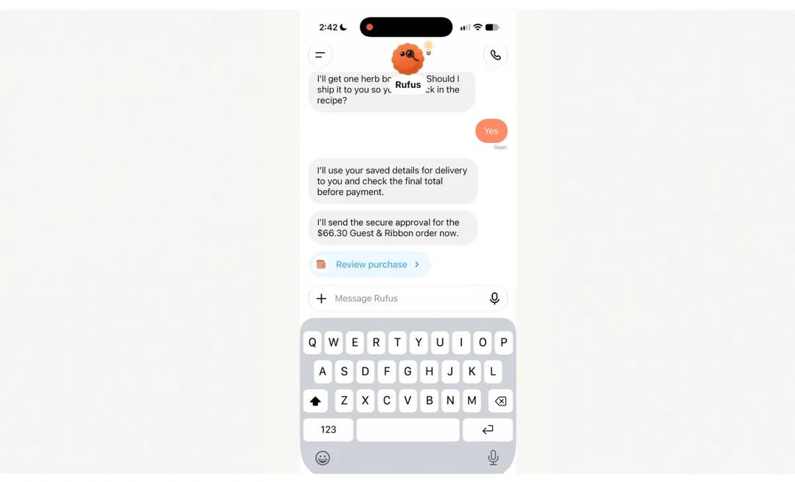
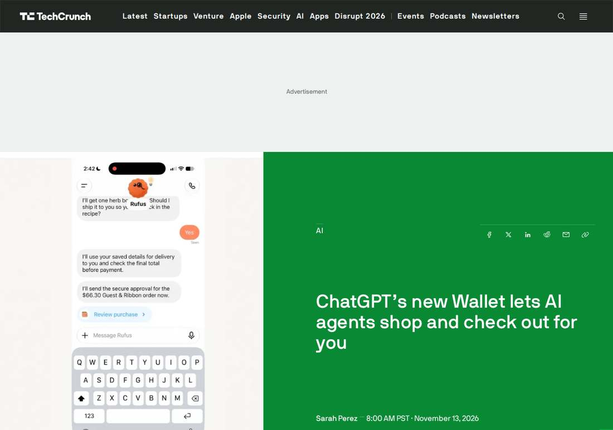

OpenAI Launches ChatGPT Wallet, Letting Dots Agents Pay for Purchases
OpenAI launched ChatGPT Wallet on Friday, November 13, 2026: a payment feature that lets its always-on dots agents complete purchases on a user's behalf without ever seeing the user's actual card details. Built with American Express, Mastercard and Visa, it rolls out first to a limited group of US ChatGPT Pro subscribers aged 18 and older with eligible US-issued cards. The user adds a card once, reviews items, total and card before each purchase, approves with a biometric security check, and the payment network then issues a single-use token carrying a substitute card number. OpenAI takes no cut at launch, per CNBC, and published a Commerce Partner Playbook alongside the wallet. Fraud partners are Forter, Riskified, Sardine and Signifyd; payment providers are Adyen, Checkout.com and Stripe. Context: Amazon blocks agent buying and United Airlines restricted unauthorized agent bookings on November 11. Dual-verified: OpenAI's announcement read in full at about 18:34 UTC plus TechCrunch read in full (published 16:00:12 UTC), with Bloomberg Law (15:11 UTC) as third corroboration.

- 01THE LAUNCH — OpenAI introduced ChatGPT Wallet on Friday, November 13, 2026, a payment feature that lets its always-on dots agents complete purchases on a user's behalf. Built in partnership with American Express, Mastercard and Visa, it rolls out first to a limited group of US ChatGPT Pro subscribers aged 18 and older with eligible US-issued cards. OpenAI calls it the first wallet that lets agents pay without access to users' actual card details and that requires a security check for every purchase, while preserving existing card rewards and protections for eligible disputes.
- 02HOW A PURCHASE WORKS — The user adds a card once, reviews the items, total and selected card, then approves with a biometric check such as Face ID or a fingerprint scan, creating a record of the authorized purchase. The payment network then issues a payment token, a substitute card number with its own security code and expiration date, and charges the selected card without sharing the real details with the agent or the merchant. OpenAI published a Commerce Partner Playbook alongside the wallet, covering product feeds, Web Bot Auth for firewalls and CDNs, and working with payment and risk providers. Fraud partners are Forter, Riskified, Sardine and Signifyd; payment providers are Adyen, Checkout.com and Stripe. OpenAI takes no cut at launch, per CNBC.
- 03THE WATCHPOINT — How fast availability widens beyond the limited US Pro group; whether the planned delegation controls arrive, spending limits, purchase categories and time periods with pre-approval; whether merchants adopt the Playbook or keep blocking agent traffic; and whether other large retailers follow Amazon, which blocks agent buying, and United Airlines, which restricted unauthorized agent bookings on November 11. The verdict will come from merchant acceptance and completed orders, not the launch announcement.
WHAT HAPPENEDWhat Happened
OpenAI launched ChatGPT Wallet on Friday, November 13, 2026, a payment feature that lets its always-on agents, called dots, complete purchases on a user's behalf. Built in partnership with American Express, Mastercard and Visa, the wallet rolls out first through dots to a limited group of ChatGPT Pro subscribers in the United States who are 18 or older and hold eligible US-issued cards. OpenAI calls it the first wallet that lets agents pay without access to users' actual card details and that requires a security check for every purchase, while preserving existing card rewards and protections for eligible disputes.
A purchase works in four steps. The user adds an eligible card once, then asks a dot to help with a purchase. Before checkout the user reviews the items, the total and the selected card, then approves with a security check such as Face ID or a fingerprint scan, and each approval creates a clear record of the authorized purchase. After approval the payment network issues a payment token, a substitute for the user's actual card details carrying its own card number, security code and expiration date, and the selected card is charged without the real details reaching either the agent or the merchant. The user still transacts directly with the business, which keeps its customer relationship and control over pricing, fulfillment, returns and customer service, and keeps the card's rewards and dispute protections. OpenAI published a Commerce Partner Playbook alongside the wallet, covering product feeds, Web Bot Auth so firewalls and CDNs recognize signed agent requests, and working with payment and risk providers. Its fraud-prevention partners are Forter, Riskified, Sardine and Signifyd; its payment service providers are Adyen, Checkout.com and Stripe.
The launch lands in a market that is already pushing back. Amazon blocks AI agents from buying on its platform, steering shoppers to its own agent Alexa, and United Airlines announced on November 11 that it is restricting unauthorized third-party AI agents from its platforms and revised its Contract of Carriage to define agent bookings as a prohibited practice. DoorDash and Uber have reported low numbers of orders placed by AI agents so far, while Meta's Muse, now past 10 million users, has seen AI-assisted shopping become a top activity. OpenAI says 1.2 billion people use ChatGPT each week, many of them to research products, compare options and decide what to buy, and the wallet is its move from helping people choose to helping them pay. It is not OpenAI's first attempt at shopping: an Instant Checkout feature introduced last fall was quickly redirected, and a reworked shopping experience followed in March.
WHY IT MATTERSThe wallet solves payment. Permission is the open question.
The design is the most careful version of agent payments yet shipped. Tokenization removes the card number from both the agent and the merchant, the biometric check on every purchase keeps a human in the loop, and the per-purchase record answers the audit question that has shadowed agent shopping: what record exists when software commits money. The 0 percent cut at launch, reported by CNBC, is a distribution play, not a revenue play: OpenAI wants the wallet to become the default way its 1.2 billion weekly users pay through agents, and it is betting that ubiquity first will pay later.
But the wallet only works where merchants let agents in, and the two biggest gatekeepers have already answered in their own ways. Amazon bars agent buying outright, United rewrote its carriage contract two days before launch, and OpenAI's own announcement concedes that many sites may unintentionally block wallet purchases and that risk systems may flag legitimate agent transactions as bot traffic. The Commerce Partner Playbook is an admission that the hard part is not the payment rail but acceptance: firewalls, fraud models and terms of service all have to be taught that a purchase made by an agent is a legitimate purchase. Until that happens at scale, the wallet is a checkout that works in the stores that choose to allow it.
WHAT TO WATCHRollout, delegation and the acceptance test
The next facts are the rollout's pace and shape: how fast availability widens beyond the limited group of US Pro subscribers, whether the planned delegation controls arrive, spending limits, purchase categories and time periods with pre-approval, and whether merchants adopt the Playbook's Web Bot Auth and product-feed steps or keep blocking agent traffic. Watch for the first fraud and chargeback data, and for whether other large retailers follow Amazon and United with explicit agent bans.
The longer test is whether agentic commerce becomes a real channel or stays a demo. DoorDash and Uber's low agent order numbers show discovery has not yet turned into transactions, and Meta's Muse is the counter-example, shopping as a top activity among more than 10 million users. ChatGPT Wallet is OpenAI's bid to close that gap from the payment side; the verdict will come from merchant acceptance and completed orders, not from the launch announcement.
SIGNAL JUDGMENT — ANALYSISOpenAI can now close the sale. Whether stores let it in is the real launch.
Tokenta Signal's judgment: ChatGPT Wallet closes the last gap between researching a purchase and completing it inside ChatGPT, and the token-plus-biometric design is the most careful version of agent payments yet: the card number never reaches the agent or the merchant, every purchase needs a human security check, and each approval leaves a record. That is a genuine step past the industry's trust problem with agent shopping. What it does not solve is permission. Amazon already bars agent buying, United rewrote its contract two days before launch, and OpenAI's own Playbook concedes that firewalls and fraud systems will flag legitimate agent purchases as bot traffic. A wallet that only works where merchants choose to allow it is a distribution bet, and the 0 percent cut says OpenAI knows it. Watch acceptance and completed orders, not the announcement.
WHAT REMAINS UNCERTAINWhat Remains Uncertain
EVIDENCEEvidence

OpenAI's announcement, "Introducing ChatGPT Wallet," read in full at about 18:34 UTC on November 13, 2026. OpenAI says it is introducing ChatGPT Wallet, setting a new bar for secure payments by agents: the first wallet that lets agents pay without access to users' actual card details and that requires a security check for every purchase, while preserving existing card rewards and protections for eligible disputes. Built in partnership with American Express, Mastercard and Visa, the wallet will initially be available through dots for ChatGPT Pro subscribers in the US. Users add a card once, review the items, total and selected card before each purchase, approve with a security check such as Face ID or a fingerprint scan, and the payment network then provides a payment token with a substitute card number, security code and expiration date. OpenAI also published a Commerce Partner Playbook alongside the wallet. TechCrunch's report, read in full the same hour (published 16:00:12 UTC, updated 18:13:22 UTC), confirms the same facts and adds that the rollout is limited at launch so OpenAI can test and improve the feature before a wider release.
PRIMARY SOURCESPrimary Sources
- OpenAI: Introducing ChatGPT Wallet
https://openai.com/index/introducing-chatgpt-wallet/ - TechCrunch: ChatGPT's new Wallet lets AI agents shop and check out for you
https://techcrunch.com/2026/11/13/chatgpts-new-wallet-lets-ai-agents-shop-and-check-out-for-you/ - Bloomberg Law: OpenAI Launches ChatGPT Wallet for Agentic Payments
https://news.bloomberglaw.com/artificial-intelligence/openai-launches-chatgpt-wallet-for-agentic-payments - Silicon Report: OpenAI announces ChatGPT Wallet to let AI agents make purchases
https://www.siliconreport.com/openai-announces-chatgpt-wallet-to-let-ai-agents-make-purchases - TipRanks: OpenAI Launches ChatGPT Wallet to Allow AI Agents to Pay for Your Shopping
https://www.tipranks.com/news/openai-launches-chatgpt-wallet-to-allow-ai-agents-to-pay-for-your-shopping - Unite.AI: OpenAI Launches ChatGPT Wallet for Agent-Assisted Purchases
https://www.unite.ai/openai-launches-chatgpt-wallet-for-agent-assisted-purchases/ - OpenAI Developers: Commerce Partner Playbook
https://developers.openai.com/commerce
RELATEDRelated Intelligence
- FAA Clears Starship Flight 15 for Historic Double-Catch Attempt
- Apple HomeView Goes on Sale at $299, Putting Siri AI on the Kitchen Counter
- Microsoft 365 Outage Passes 27 Hours as 20:02 UTC Update Says Mail Still Catching Up
- Microsoft 365 Outage Passes 25 Hours as 17:57 UTC Update Says Underlying Issue Addressed